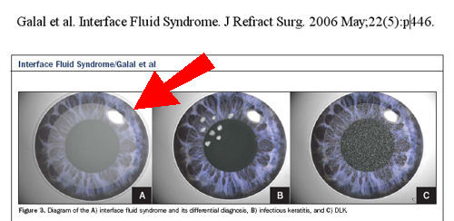

Синдром пограничной жидкости может возникать вторично по отношению к вызванному стероидами повышению внутриглазного давления (ВГД) после операции LASIK. Синдром поверхностной жидкости после операции LASIK иногда ошибочно диагностируется как диффузный пластинчатый кератит (ДЛК) и неправильно лечится местными препаратами, что может привести к ухудшению состояния. Высокое ВГД может привести к повреждению зрительного нерва, что приводит к потере зрения.
Проблемы, связанные с Lasik? Отправьте отчет о медицинском наблюдении с Управлением по санитарному надзору за качеством пищевых продуктов и медикаментов в режиме онлайн. Кроме того, вы можете позвонить в Управление по санитарному надзору за качеством пищевых продуктов и медикаментов по телефону 1-800-FDA-1088, чтобы сообщить об этом по телефону. бумажный бланк и либо отправьте его по факсу на номер 1-800-FDA-0178, либо отправьте по почте на адрес, указанный внизу страницы 3, либо загрузите Мобильное приложение MedWatcher для сообщения о проблемах с LASIK в FDA с помощью смартфона или планшета. Ознакомьтесь с образцом Отчеты о травмах, полученных с помощью LASIK в настоящее время находится на рассмотрении в FDA.
Пациенты с осложнениями LASIK приглашаются на присоединяйтесь к обсуждению на FaceBook
Ниже приведены выдержки из рецензируемых журнальных статей, в которых сообщается о синдроме межжелудочковой жидкости после операции LASIK.

Синдром поверхностной жидкости при рутинной операции по удалению катаракты через 10 лет после лазерного кератомилеза In Situ.
Роговица. 29 февраля 2012 года.
Ортега-Усобиага (Ж), Мартин-Рейес (С), Льовет-Осуна (Ф), Дамас-Матеаче (Б), Бавьера-Сабатер (Х).
Клода Бавьера, Институт европейского образования, Мадрид, Испания.
Абстрактный
ЦЕЛЬ: Синдром поверхностной жидкости - необычное осложнение после лазерного кератомилеза in situ (LASIK). Мы представляем случай синдрома поверхностной жидкости после операции по удалению катаракты у пациента, ранее перенесшего операцию LASIK.
МЕТОДЫ: 62-летний мужчина перенес плановую операцию по удалению катаракты на левом глазу через 10 лет после операции LASIK на обоих глазах. На следующий день после операции внутриглазное давление (ВГД) составляло 21 мм рт.ст., а в ране, образовавшейся после операции LASIK, имелся карман с жидкостью. Пациентка получала 0,50%-ные глазные капли с тимололом два раза в день.
РЕЗУЛЬТАТЫ: Проблема была устранена в течение 1,5 месяцев. Два месяца спустя пациентке была проведена плановая операция по удалению катаракты на правом глазу. На следующий день ВГД составило 11 мм рт.ст., а жидкость на интерфейсе LASIK присутствовала. Пациентка получала 0,5%-ные глазные капли с тимололом два раза в день. Через два месяца после операции проблема была полностью решена.
ВЫВОДЫ: причинами синдрома могли быть глазная гипертензия и травматическое повреждение эндотелиальных клеток. Хотя ВГД было не очень высоким, предыдущая операция LASIK могла привести к тому, что мы недооценили его.
Синдром отсроченного появления поверхностной жидкости после лазерного кератомилеза in situ, вызванного комбинированной операцией по удалению катаракты и витреоретинальной хирургией.
J Рефракционная хирургия катаракты, 24 декабря 2011 года.
Хан Младший, У Младший, Хен Младший.
Абстрактный
40-летний мужчина, перенесший 13 лет назад лазерный кератомилез in situ (LASIK), перенес комбинированную операцию по удалению катаракты и витреоретинальную хирургию в связи с регматогенной отслойкой сетчатки и задней субкапсулярной катарактой. Через две недели после операции пациент обратился с жалобами на безболезненное ухудшение зрения. Наблюдалось диффузное помутнение зрения, и было начато противовоспалительное лечение, включающее местные стероидные препараты и циклоспорин. Неделю спустя ухудшение зрения не улучшилось, а внутриглазное давление составило 27 мм рт.ст. Помутнение поверхности, скопление жидкости и отек лоскута были обнаружены и подтверждены с помощью оптической когерентной томографии переднего сегмента в спектральной области. После отмены стероидов и добавления препаратов, снижающих ВГД, острота зрения, скопление жидкости на границе раздела и помутнение улучшились. Этот случай иллюстрирует, что синдром поверхностной жидкости может развиться более чем через 10 лет после LASIK, вызванный глазной гипертензией и воспалением после внутриглазной операции.
Межслойный Стромальный Кератит, Вызванный Повышением Внутриглазного Давления, Возникающий Через 9 Лет После Лазерного Кератомилеза In Situ.
Роговица. 20 сентября 2011 года.
Ли В., Сулевски Я., Заиди А., Николс К.У., Бунья В.Ю.
Абстрактный
Индуцированный повышенным внутриглазным давлением межслойный стромальный кератит (PISK) - это помутнение поверхности глаза, обычно возникающее через недели или месяцы после лазерного кератомилеза in situ (LASIK), которое связано с повышенным внутриглазным давлением и ухудшается при лечении стероидами. Существуют доказательства того, что помутнение поверхности является результатом аномальной динамики жидкости в роговице после LASIK. Мы представляем случай межслойного стромального кератита, вызванного давлением, возникшего через 9 лет после LASIK на фоне переднего увеита. Этот случай подчеркивает важность учета таких диагнозов, как межслойный стромальный кератит, вызванный давлением, при дифференциальной диагностике у пациента с помутнением роговицы и проведением LASIK в анамнезе.
Пограничный отек роговицы, вызванный повышением внутриглазного давления, вызванного стероидами, имитирует диффузный пластинчатый кератит
Журнал рефракционной хирургии, том 22, № 5, май 2006
Ахмед Галал, доктор медицинских наук; Альберто Артола, доктор медицинских наук; Хосе Бельда, доктор медицинских наук; Хосе Родригес-Пратс, доктор медицинских наук; Паскуаль Кларамонте, доктор медицинских наук; Антонио Санчес, доктор медицинских наук; Оскар Руис-Морено, доктор медицинских наук; Хосе; с Мерайо, доктор медицинских наук; Хорхе Али, доктор медицинских наук
ЦЕЛЬ: Описать пограничный отек роговицы, возникающий вследствие вызванного стероидами повышения внутриглазного давления (ВГД) после операции LASIK.
МЕТОДЫ: Ретроспективная серия наблюдений. После моделирования методом LASIK диффузного пластинчатого кератита (ДЛК) на 13 глазах наблюдался диффузный отек межглазничного пространства, вызванный повышением ВГД, вызванным стероидами. Средний возраст пациентов составил 31,4±5,3 года. Пациенты были разделены на две группы в соответствии с предварительным ошибочным диагнозом: в группу ДЛК (1-я группа) вошли 11 глаз, а в группу инфекции (2-я группа) - 2 глаза (микробный кератит). Средний срок наблюдения составил 8,1плюс0,5 недели.
результаты: В группе ДЛК типичное диффузное помутнение было локализовано на границе раздела и распространялось на зрительную ось, нарушая зрение во всех глазах. Предварительный диагноз - ДЛК с поздним началом, и было начато применение местных стероидов. Повторное обследование показало повышенное ВГД, измеренное в центре и на периферии роговицы с помощью аппланационной тонометрии (среднее значение 19,1 мм рт.ст. и 39,5 мм рт.ст. соответственно), что привело к отеку поверхности с явными жидкостными очагами. Прием стероидов был прекращен, и была начата местная антиглаукомная терапия. Отек поверхности глаза уменьшился, и в конце периода наблюдения прозрачность роговицы восстановилась, а ВГД снизилось до нормальных значений. В группе с инфекцией наблюдалась реакция, похожая на микробный кератит, и им были проведены подтяжка лоскута, обработка поверхностной раны и биопсия с введением витаминизированных антибиотиков и стероидов. После выявления повышенного ВГД прием стероидов и антибиотиков был прекращен и была начата местная антиглаукомная терапия, что привело к уменьшению отека поверхности глаза.
выводы: У лиц, принимающих стероиды после LASIK, может развиться синдром межклеточной жидкости, вторичный по отношению к вызванному стероидами повышению ВГД, с вводящей в заблуждение клинической картиной, имитирующей ДЛК или инфекционный кератит. Лечение включает отмену местных стероидов и начало местной терапии против глаукомы.
Индуцированный Давлением Межслойный Стромальный Кератит после Лазерного Кератомилеза In Situ.
Роговица. 20 апреля 2011 года.
Туртас Т., Копсачилис Н., Мейллер Р., Крузе Ф., Курсифен С.
ЦЕЛЬ: Описать пациента с межслойным стромальным кератитом, вызванным повышением внутриглазного давления (ВГД) [Межслойный стромальный кератит, вызванный давлением (PISK)], после операции лазерного кератомилеза на месте (LASIK).
МЕТОДЫ: Описание конкретного случая и обзор литературы.
РЕЗУЛЬТАТЫ: Мы сообщаем о случае интерламеллярного стромального кератита, вызванного повышением внутриглазного давления после операции LASIK. У 42-летнего мужчины после операции LASIK наблюдалось постоянное помутнение межзубной перегородки. Пациентка описала снижение остроты зрения после первых 2 недель после операции, которое не улучшилось при местном применении высоких доз стероидов, и значительное повышение ВГД до 48 мм рт.ст. ВГД было устойчивым к максимальной местной антиглаукоматозной терапии. У пациентки наблюдалось улучшение остроты зрения и уменьшение помутнения межзрачкового пространства после прекращения местного применения стероидов и снижения ВГД как при местном, так и при системном лечении. Оптическая когерентная томография с использованием щелевой лампы исключила скопление жидкости в межзрачковом пространстве.
ВЫВОДЫ: Клинические проявления PISK практически идентичны диффузному пластинчатому кератиту после LASIK. Важно измерять ВГД и проявлять подозрительность, если после первой недели после операции возникает диффузное помутнение поверхности раздела, которое устойчиво к местному стероидному лечению или даже усиливается в ответ на него и не связано с другими причинами. Оптическая когерентная томография со щелевой лампой - это ценный инструмент, который позволяет проводить различие между объемным сбором жидкости на границе раздела фаз и объемным сбором жидкости на границе раздела фаз, чтобы избежать ложно низкого или нормального измерения ВГД в PISK.
Рефракционная хирургия, февраль 2009; 25(2):235-9.
Стероид-индуцированный синдром поверхностной жидкости после LASIK.
Мойя Кальеха, Ирибарне Феррер, Санс Хорхе, Седрик Фернандес.
ЦЕЛЬ: Сообщить о глазных проявлениях у пациентов, у которых развился синдром поверхностной жидкости, вызванный повышением внутриглазного давления (ВГД), вызванным стероидами, после операции LASIK. У пациентов были схожие симптомы диффузного пластинчатого кератита (ДЛК).
МЕТОДЫ: Ретроспективная оценка состояния четырех глаз трех пациентов с потерей зрения, жидкостью на границе раздела пластинок, а также с изменениями ВГД и топографии вследствие длительного лечения топическими кортикостероидами после LASIK.
РЕЗУЛЬТАТЫ: Микроскопия с помощью щелевой лампы выявила оптически прозрачное пространство, заполненное жидкостью, между лоскутом и стромальным ложем. После ранней диагностики лечение местными кортикостероидами было прекращено, что привело к быстрому и постепенному исчезновению симптомов.
ВЫВОДЫ: Вызванное стероидами повышение ВГД после LASIK может вызвать транссудацию водянистой жидкости через эндотелий, которая скапливается на границе раздела лоскутов. Важно провести раннюю дифференциальную диагностику синдрома поверхностной жидкости при подозрении на ДЛК, поскольку продолжение лечения кортикостероидами может привести к серьезной потере зрения.
Я офтальмолог. Июнь 2005;139(6):1137-9.
Связанный с увеитом отек лоскута и скопление жидкости на границе раздела пластинок после операции LASIK.
Маклеод С.Д., Мазер Р., Хванг Д.Г., Марголис Т. П.
ЦЕЛЬ: Сообщить о двух случаях патологии роговицы, связанной с передним увеитом, после лазерного кератомилеза in situ (LASIK).
ДИЗАЙН: Отчет о наблюдательном случае.
МЕТОДЫ: Были обследованы 47-летний мужчина и 50-летняя женщина, у которых после операции LASIK наблюдались потеря зрения и изменения роговицы, связанные с острым передним увеитом.
РЕЗУЛЬТАТЫ: У 47-летнего мужчины, перенесшего операцию LASIK по поводу миопии малой степени, образовался межслойный жидкостный карман на уровне стыка лоскута, в то время как у 50-летней женщины, перенесшей операцию LASIK по поводу дальнозоркости, развился выраженный отек лоскута без скопления жидкости на стыке.
ВЫВОДЫ: Эти два случая продемонстрировали острое накопление жидкости в роговице, связанное с эпизодами острого переднего увеита в глазах, подвергшихся LASIK. Увеит следует рассматривать как фактор риска осложнений со стороны роговицы, угрожающих зрению после LASIK.
Офтальмология. Апрель 2002 г.;109(4):659-65.
Глаукома, вызванная стероидами, после лазерного кератомилеза in situ, связанного с поверхностной жидкостью.
Гамильтон доктор медицинских наук, Манш И.Э., Рич Л.Ф., Мэлони Р.К.
ЦЕЛЬ: Описать глазные проявления и клиническое течение заболевания, при котором в глазах образуется поверхностная жидкость после операции лазерного кератомилеза in situ (LASIK) в результате повышения внутриглазного давления, вызванного стероидами.
ДИЗАЙН: Ретроспективная, несопоставимая серия случаев вмешательства.
УЧАСТНИКИ/ВМЕШАТЕЛЬСТВО: Мы обследовали шесть глаз четырех пациентов, у которых диффузный пластинчатый кератит развился после миопической операции LASIK без осложнений и которые получали местное лечение кортикостероидами.
ОСНОВНОЙ РЕЗУЛЬТАТ: исследование с помощью щелевой лампы, измерение внутриглазного давления и потеря поля зрения.
РЕЗУЛЬТАТЫ: У всех глаз на границе раздела пластинок между лоскутом и стромальным ложем образовался карман с жидкостью, связанный с повышением внутриглазного давления, вызванным кортикостероидами. Однако из-за наличия жидкости на поверхности глаза внутриглазное давление было нормальным или низким по данным центральной роговичной аппланационной тонометрии Гольдмана на всех глазах. В нескольких случаях повышенное внутриглазное давление было диагностировано при периферическом измерении после нескольких месяцев повышенного давления. У всех шести глаз наблюдались дефекты полей зрения. У трех глаз из двух пациентов была тяжелая глаукоматозная оптическая нейропатия и снижение остроты зрения в результате недиагностированного повышения внутриглазного давления, вызванного стероидами.
ВЫВОДЫ: Вызванное стероидами повышение внутриглазного давления после операции LASIK может вызвать отток внутриглазной жидкости через эндотелий, которая скапливается на границе раздела лоскутов. Наличие жидкости на границе раздела приводит к неточным результатам центральной аппланационной тонометрии, что затрудняет диагностику глаукомы, вызванной стероидами. Это может привести к серьезной потере зрения.
Офтальмохирургическая лазерная визуализация. Июль-август 2008 г.;39 (4 дополнительных): S80-2.
Визуализация с высоким разрешением при осложненном синдроме взаимодействия жидкости с лоскутом LASIK.
Рамос Д.Л., Чжоу С., Йо К., Тан М., Хуан Д.
Авторы сообщают о случае синдрома поверхностной жидкости после операции LASIK, который привел к врастанию эпителия, о последствиях которого до настоящего времени не сообщалось. Поверхностная жидкость была вызвана глазной гипертензией, вызванной стероидами. На 49-й день после операции LASIK с помощью конфокальной микроскопии и оптической когерентной томографии в области Фурье с высоким разрешением были визуализированы поверхностная жидкость, врастание эпителия и неклеточные отражающие отложения. Воспалительных клеток или инфекционных организмов обнаружено не было. Эти технологии визуализации с высоким разрешением были полезны для неинвазивной оценки локализации и характера патологий на стыке лоскутов на микроструктурном уровне.
Отказ от ответственности: Информация, содержащаяся на этом веб-сайте, представлена с целью предупреждения людей об осложнениях процедуры LASIK перед операцией. Пациентам, у которых возникли проблемы с процедурой LASIK, следует обратиться за консультацией к врачу.